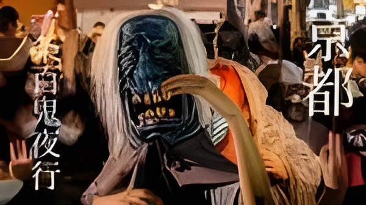
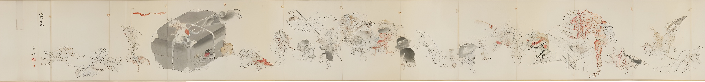

Sumérgete en el Mundo de los Yokai
La celebración actual ofrece una variedad de actividades para todos los gustos. Aquí te contamos qué puedes esperar:
El Gran Desfile
El punto culmen. Un desfile nocturno liderado por el Oiran Fantasma y samuráis caídos, que recorre las calles desde el distrito de Yoshiwara hasta el corazón de Asakusa. Un espectáculo hermoso e inquietante.
Fiesta de DJ Yokai
Una pista de baile al aire libre donde los yokai (¡y los humanos disfrazados!) bailan al ritmo de DJs en vivo alrededor de una torre de festival (yagura), creando un ambiente similar al Bon Odori pero con un toque sobrenatural.
El Tokyo Hyakki Ondo
¡La nueva canción y baile oficial del festival! Una canción de Bon Odori moderna creada para este evento, con una coreografía sencilla y divertida que todos pueden seguir.
Puestos de Comida Yokai
Deléitate con bebidas y comidas callejeras con temática de monstruos, como el "Cóctel 1L de Tengu" o la "Cerveza de la Mujer de Nieve".
Espectáculos Especiales
Actuaciones de danza y música en vivo que fusionan lo tradicional con lo moderno, producidas por artistas locales.
Conviértete en un Yokai por una Noche
Fecha principal: Último o penúltimo sábado de octubre.
Lugares: Asakusa Rokku Broadway y Koenji Look Shopping Street (Tokio).
Para espectadores
La entrada para ver el desfile y disfrutar del ambiente es gratuita. ¡Solo trae tu curiosidad y tu espíritu festivo!
Para participantes
- Registro: inscríbete antes de mediados de octubre.
- Coste: 3.000 yenes adultos / 1.000 yenes niños.
- Única regla: tu disfraz debe ser de un yokai. Nada de anime ni copyright.
Consejo: llega con tiempo, prueba la comida y hazte fotos con los yokai.
Bebidas y Manjares Espectrales
La experiencia Hyakki Yagyo no sería completa sin probar sus ofertas gastronómicas únicas. Los puestos ofrecen:
- Cócteles temáticos como "Red Bull del Ichiban Cotton" o "Vodka con arándano de la Mujer de Nieve".
- Cerveza de barril artesanal con espuma decorada con arte divino.
- Comida callejera japonesa con un toque monstruoso para recorrer el festival.
Galería

Disfraz detallado con máscara y accesorios artesanales, típico de los participantes.

Primer plano del maquillaje y los ornamentos que completan el atuendo yokai.

Rollo ilustrado (emaki) que representa escenas tradicionales del Hyakki Yagyo.
Suscríbete al desfile
Déjanos tu correo y te avisaremos de las próximas fechas y novedades del festival.